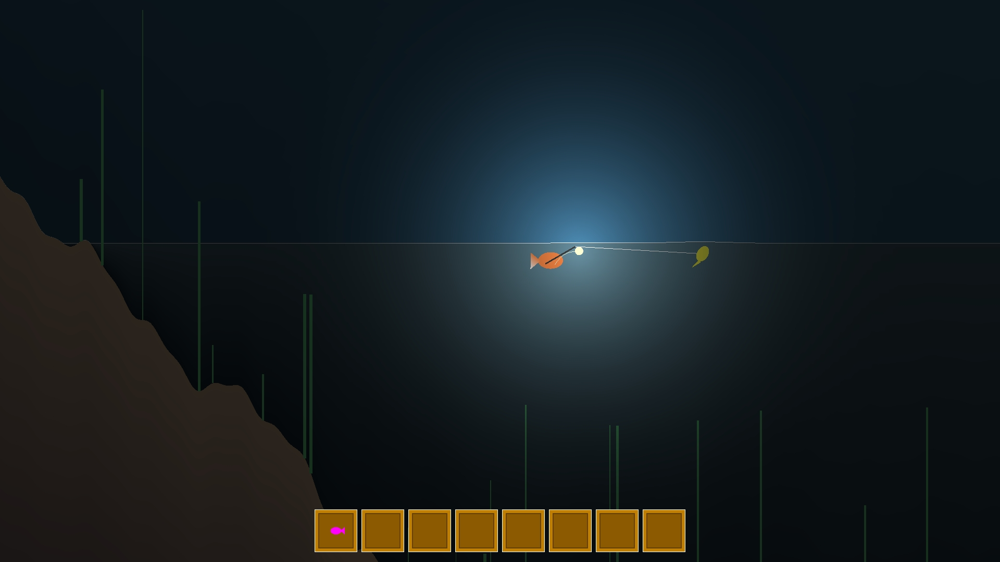

You are a fish. You fish other fish. Everything is a fish and can be fished, including you! Emphasis on psychological horror. Choices have consequences.
Utilizes simple geometric shapes together with shaders and procedurally generated textures to create various atmospheres ranging from cozy to terrifying. The deeper you descent, the darker it gets... What lurks in the depths?
Fish in the reefs of the shallows or the brine pools in the deep abyss. Trade with the Moray Eel shop keepers. Help Clown Fish Coorporation (CFC) to develop their housing projects of transplanting more sea anemones. Upgrade your rod. Buy a house. Undergo plastic surgery for new features, colors and patterns. Farm kelp. Adopt a nudibranch and name it Gary. You can do it all.
Go (,) Fish!
